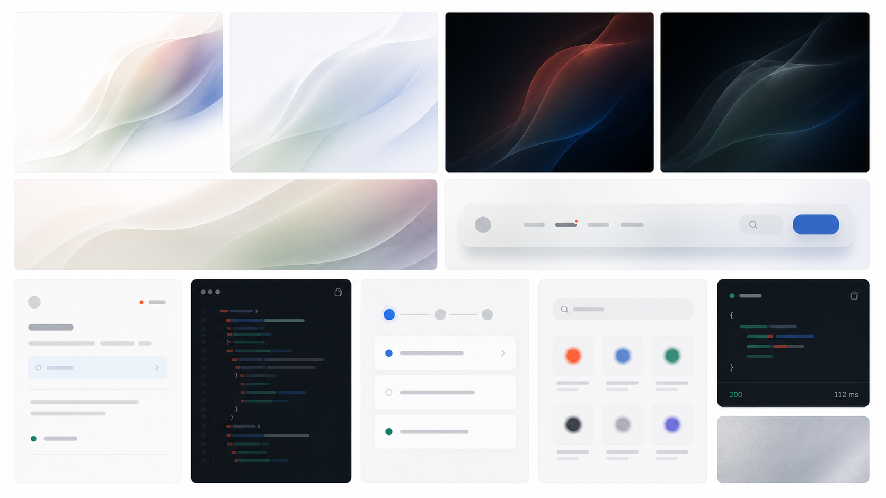

Clarity first
Explain the product in ordinary language before asking the visitor to interpret a graphic.
Website foundation v0.5
A quiet white canvas, direct product language, restrained technical typography, and concentrated moments of atmospheric color.
These are the rules to carry into every new section. They define the system more strongly than any single component.
Explain the product in ordinary language before asking the visitor to interpret a graphic.
Keep the page white and concentrate expressive color inside purposeful visual moments.
Show legible product behavior instead of relying on abstract illustration or generic decoration.
Use spacing and tone first, then one shared elevation hierarchy for stages, product tiles, and icon wells.
Whitespace creates confidence, but content still fits a typical laptop viewport. The hero is 52px.
Use mono selectively for routing, tools, protocols, and traceability—not for ordinary body copy.
This board is a visual target, not a production asset sheet. It extends the approved folded atmosphere into light and dark material while keeping the product interface flat, sparse, and credible.

Direction reference · v1
Use this board to judge family resemblance, material restraint, light-to-dark balance, and component hierarchy. Rebuild cards, boards, navigation, and product snippets as live HTML and CSS; only atmospheric fields and textures become raster assets.
White dominates. Orange signals. Pale blue structures selected states. Midnight technical surfaces always use inverse text.
#FFFFFF#11110F#F2381B#164076#E5EFF9#F1F1ED#0D223B#F3F6F9#246B5A#EDF6F2The hero sweep and the faceted process plates share pearl, mineral, warm neutral, and cobalt material. Use the family to create continuity while varying the emphasis from one story to the next.
--hero-folded-light-background
--pattern-folded-balanced
--pattern-folded-mineral
--pattern-folded-cobalt
--pattern-folded-warm
Quiet Material and the approved gradients are complementary layers. Compose them in this order, stop when the story is clear, and never add expression merely to alternate colors.
White or a quiet structural surface carries ordinary copy and spacing.
--canvas · --surface
A folded field creates atmosphere only when the composition needs spatial depth.
folded image tokens
One gradient identifies the narrative role: tools, trust, action, or orchestration.
--atmosphere-*
Flat or glass UI sits above the atmosphere and remains legible, live, and reusable.
product · glass tokens
google-searchOpening · primary proof
Reserved for the hero, a major product proof, or another rare opening where the complete Strale palette earns the emphasis.
Tools · infrastructure
Use Cobalt for breadth, routing, infrastructure, and catalogue moments. The board is expressive; its tool cells stay flat.
registryTrust · validation
Mineral is concentrated assurance, not generic success. Use it around evidence for matching, validation, provenance, and reliability.
Integration · execution
Dark technical surfaces are earned by real code, execution, or orchestration. They should never become generic decorative cards.
Navigation · overlay
Glass is a functional overlay for navigation and compact controls. It reuses one fill, border, filter, and shadow recipe across the site.
Dusk closes a sequence without introducing another product card or decorative scene.
Primary action →Orchestration · closing
Use Dusk for orchestration or a closing transition. Preserve a white-canvas break before the footer or the next major dark surface.
Instrument Sans carries the message. IBM Plex Mono marks the technical details that make Strale credible.
Section spacing is semantic and reusable. It creates clear transitions without stacking oversized gaps between adjacent stories.
Standard sections use 48px on phone, 64px on tablet, 72px on desktop, and 92px on expansive displays. Short laptops compact to 48–56px.
Reserved for the entry or exit of a major sequence; it reduces to 80px on tablet and 64px on phone.
Eyebrow to heading, then heading to supporting copy.
Introduction to primary proof, cards, diagram, or code surface.
Main content to the quiet mono summary or metadata strip.
Standard card padding and compact product-row height.
Controls are direct and product proof is orderly. Expressive color belongs around the evidence, not inside every row.
Action hierarchy
google-searchHow Strale Works, the hero atmosphere, and capability stories share one elevation model. Depth communicates nesting—not decoration.
StageMatch perceived elevation rather than reusing identical numbers. Quiet mineral stages use --shadow-stage-float. Saturated or patterned stages use --shadow-atmosphere-float with --halo-atmosphere-float and the light-catching --border-stage-atmosphere.ProductTranslucent white tile with layered blue-black elevation. Use --shadow-product-float for nested interface fragments. Capability-carousel cards are repeated soft stages: their rail aliases reuse --surface-stage-soft, --border-stage-soft, and --shadow-stage-float, with enough scrollport clearance to preserve both shadow layers.IconRounded mineral well using the shared line-icon family.ArtworkUse one transparent 3:2 canvas inside a fixed central visual bay. Normalize by visible bounds, keep artwork centred, and never add a baked-in card-coloured plate or inset shadow.The foundation and reviewed homepage patterns are stable. New patterns are added only after they have been reviewed in context.
| Locked | Approved Core palette, accessible contrast roles, type families, hero scale, editorial rhythm, mono register, action hierarchy, borderless header, Quiet Material surface stack, shared glass recipe, and homepage patterns through pricing, closing CTA, and footer. |
|---|---|
| Provisional | Review in context Clean dark folded raster masters, application component library, customer-proof pattern, illustration, photography, data visualisation, and complete application dark mode. |
| Change rule | Reuse an existing token first. Add a new token only for a new reusable role. Never change a locked token to solve one isolated composition. |